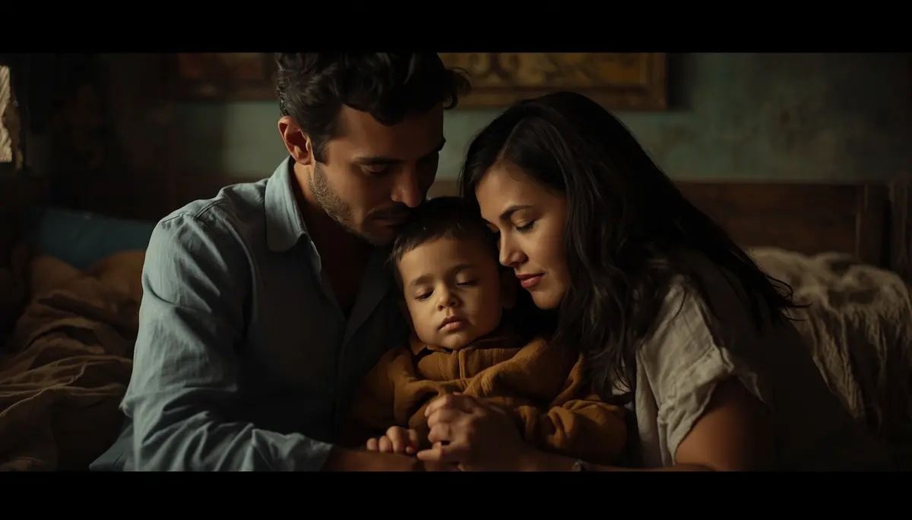

Un refugio frente al desconcierto
El primer impacto sacude por la incertidumbre del nombre y el camino desconocido. Cuando recibes un diagnóstico poco frecuente, el suelo parece moverse bajo los pies, y es completamente natural sentir vértigo, miedo o rabia contenida. Sin embargo, el desconcierto inicial da paso poco a poco a la claridad.
Sostener el primer golpe sin prisas
No necesitas entenderlo todo el primer día ni gestionar cada trámite a la carrera. Lo primero es detenerse, respirar y aceptar que las emociones complejas forman parte del proceso de adaptación. Date permiso para sentir sin exigencias de perfección.
"Aceptar la incertidumbre no significa rendirse, sino aprender a caminar con paso firme sobre un terreno nuevo, sabiendo que el amor y la constancia son las mejores brújulas."
La vida continúa con su misma alegría
Un diagnóstico médico no define la esencia de un niño. Detrás de las etiquetas clínicas hay risas, juegos, miradas cómplices y una infancia que sigue reclamando su espacio de luz. La rutina se reorganiza, los miedos se van colocando en su sitio y la vida familiar encuentra de nuevo su equilibrio.
➔ Volver al índice de enfermedades raras